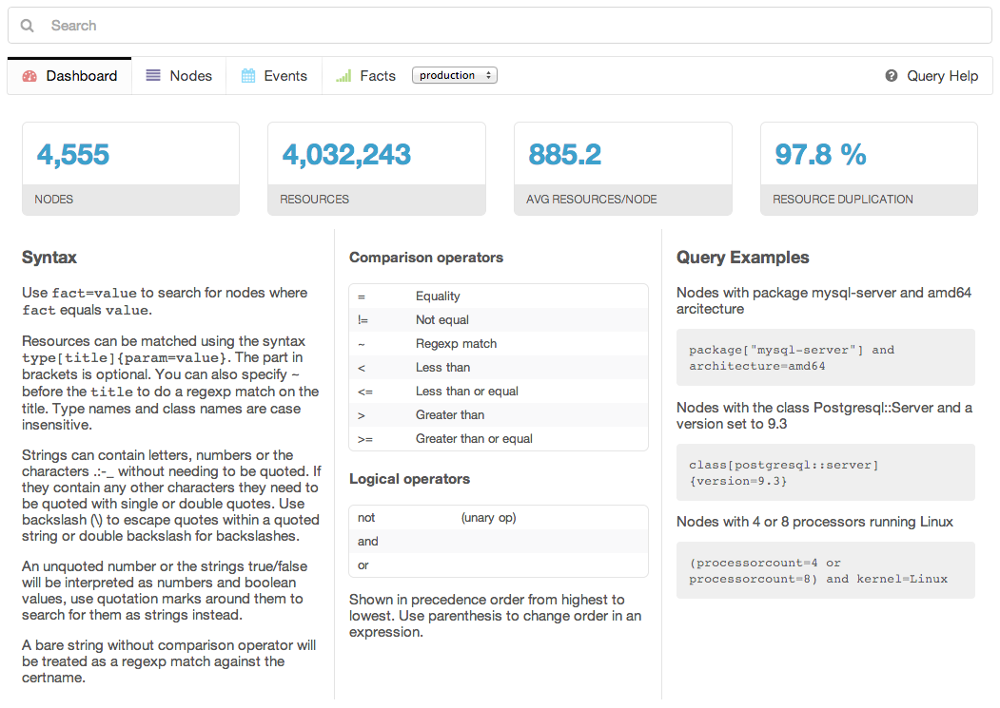
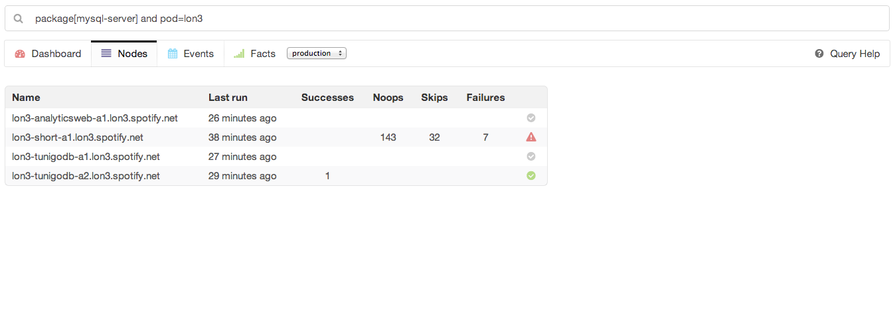
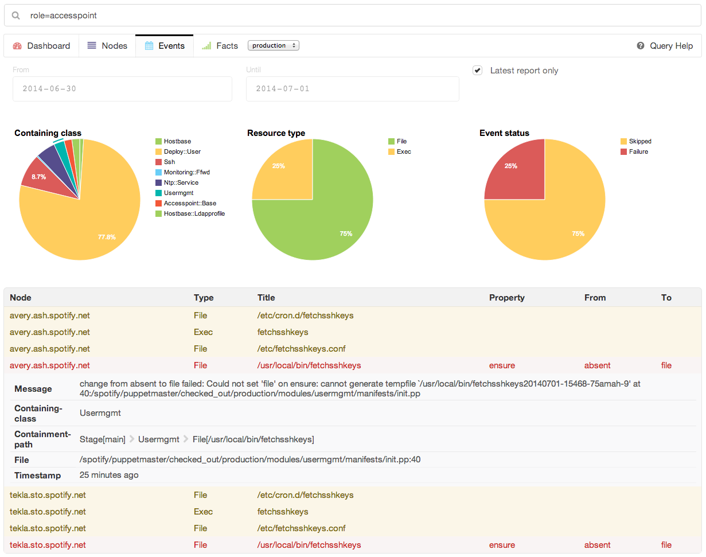
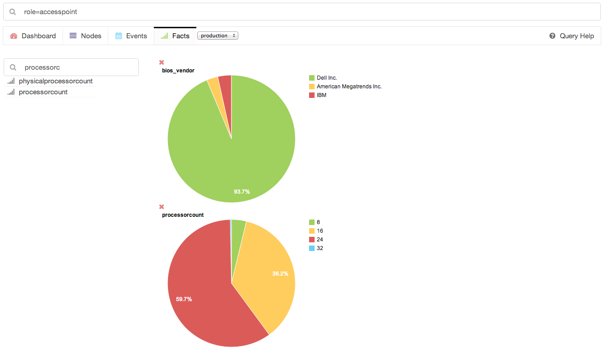

Overview
Puppet Explorer is a web application for PuppetDB that lets you explore your Puppet data. It is made using AngularJS and CoffeeScript and runs entirely on the client side, so the only backend that is needed is PuppetDB itself and a web server to share the static resources.
It has the same query language as the popular Puppet module dalen-puppetdbquery. This lets you easily filter for a selection of nodes and show the events or facts for only them. So you can handle hosts as groups without needing to have predefined groups, just make them up as you need and click on the pie charts to drill down further. The JavaScript version of this query parser is available as a separate component so you can use it in your own projects easily, node-puppetdbquery.
All views in the application are made to be able to link directly to them, so it is easy to share information you find with coworkers.
It has support for multiple PuppetDB servers.
Dependencies
It is using the V4 PuppetDB API from PuppetDB 2.1. Version 1.0.0 works with PuppetDB 2.0, but the current version only works with PuppetDB 2.1.
Screenshots
The dashboard:

Node search:

Events view and filtering:

Facts view:

Development and local testing
Install all required dependencies using npm install, then you can build the
application using grunt. The results will be located in the dist directory.
Use grunt serve to start a local web server pointing to a local PuppetDB
instance.
Optionally you can use the --puppetdb=url option to specify a URL to proxy
PuppetDB connections to. Another way is to create a SSH tunnel to your PuppetDB
server, ssh -L 8080:localhost:8080 puppetdb.example.com.
With grunt watch it will rebuild any source files that changes and put the
results in the dist directory.
To build a Debian package use grunt build_debian, this requires the
devscripts and debhelper packages to be installed.